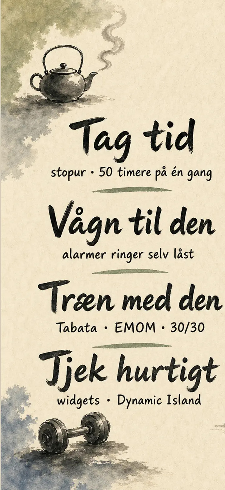
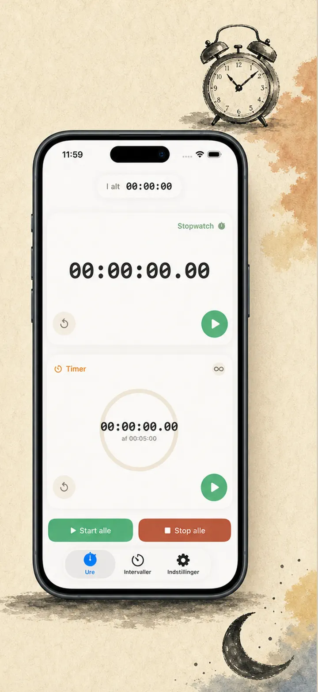
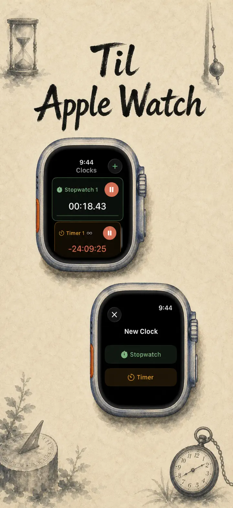
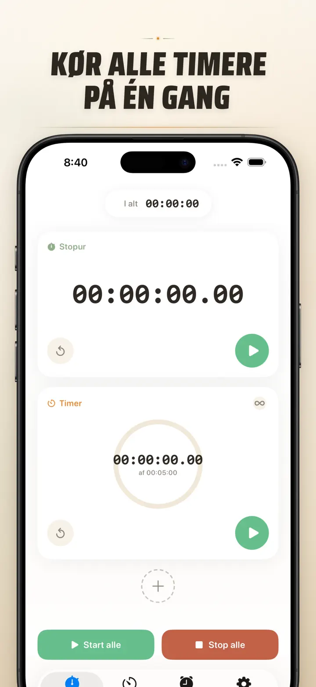
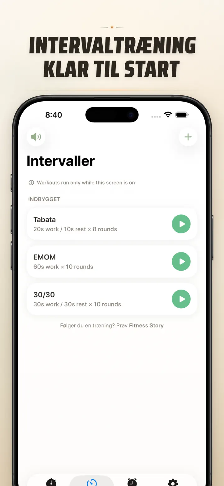
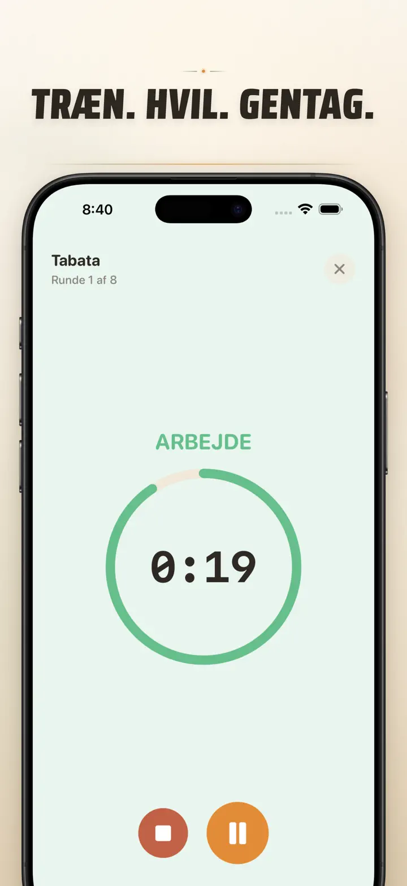
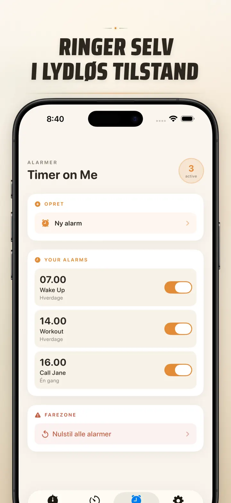

Timer on Me
Timer, vækkeur, stopur, HIIT
Nu med datoalarmer: sæt en engangsalarm til enhver fremtidig dato & tid, ved siden af tilbagevendende alarmer, 50 timere på én gang, HIIT & Tabata og Apple Watch.
Hent i App Store
Om appen
Timer on Me er din multi-timer og stopur til iPhone, iPad og Apple Watch. Op til 50 uafhængige timere på én gang, præcise intervaltræninger og alarmer, der faktisk ringer — selv med låst iPhone eller lukket app.
VÆKKEUR
- Vække- og påmindelsesalarmer med egne labels og ugedagsplaner
- Drevet af AlarmKit — ringer, selv når iPhone er låst eller Timer on Me er lukket
- Indstillelig snooze (3 / 5 / 9 / 15 / 30 minutter) eller ingen snooze
- Vælg blandt indbyggede ringetoner eller importér dine egne lyde
- Tænd og sluk med ét tryk fra det dedikerede Vækkeur-faneblad
TRÆNING OG INTERVALLER
- Klare Tabata-, EMOM- og 30/30-presets — to tryk og du er i gang
- Egen intervaleditor: arbejde, pause og runder i minutter og sekunder
- Fuldskærms træningstilstand med farveskift pr. fase og lydløs mulighed
- Pause, spring over og genoptag midt i sessionen uden at miste fremskridt
APPLE WATCH
- Rigtig native watchOS-app, ikke bare en spejling af telefonen
- Flere stopure og timere kørende på håndleddet samtidig
- Stopur med hundrededeles sekunds præcision
- Egne urskive-komplikationer til ét-tryks-start
- Virker selvstændigt, også uden iPhone i nærheden
50 TIMERE SAMTIDIG
- Op til 50 uafhængige timere og stopure i samme session
- Start, stop og nulstil enkeltvis eller i grupper
- Auto-gentagelse til cykliske runder
- Timere tæller videre efter nul for at fange overtid
- Farvede fremskridtsbjælker: gul ved 50 %, rød ved 10 %
- Træk for at sortere, giv dine egne navne
PÅLIDELIGE ALARMER
- AlarmKit: alarmerne ringer, selv når iPhone er låst eller appen lukket
- Dynamic Island og Live Activity — fremskridt på et øjeblik
- Hjemmeskærm-widgets: lille, mellem, stor
- Indbyggede toner: klokker, fuglesang, vintage-telefoner
- Tryk for at lytte før du vælger
- "Hold skærm tændt"-tilstand til lange sessioner
TILPAS OG DEL
- Vis eller skjul decimaler, totaler og procenter
- Gem og overskriv presets, hent dem frem med ét tryk
- Eksportér som CSV, JSON eller ren tekst
- Del med kolleger, elever eller din træner
TIL iPhone, iPad OG APPLE WATCH
- Layout der tilpasser sig enhver skærmstørrelse
- Split View på iPad
- 34 sprog
PERFEKT TIL
- HIIT, Tabata, CrossFit og kredsløbstræning
- Runder af boksning, kickboxing og kampsport
- Pomodoro, gymnasium, HF og eksamenslæsning
- Kaffebrygning, te, blødkogte æg, frikadeller og ovn
- Yoga, pilates, meditation og åndedrætsøvelser
- Generalprøver og instrumentøvelse
- Undervisning, workshops og gruppeaktiviteter
- Brætspil og hyggeaftener
Hent Timer on Me og tag kontrol over hvert minut — i fitnesscenteret, på arbejdet eller derhjemme.
Privatlivspolitik: https://masawata.net/privacy-policy.html Servicevilkår: https://www.apple.com/legal/internet-services/itunes/dev/stdeula/
Skærmbilleder






Timer on Me
Nu med datoalarmer: sæt en engangsalarm til enhver fremtidig dato & tid, ved siden af tilbagevendende alarmer, 50 timere på én gang, HIIT & Tabata og Apple Watch.
Hent i App Store